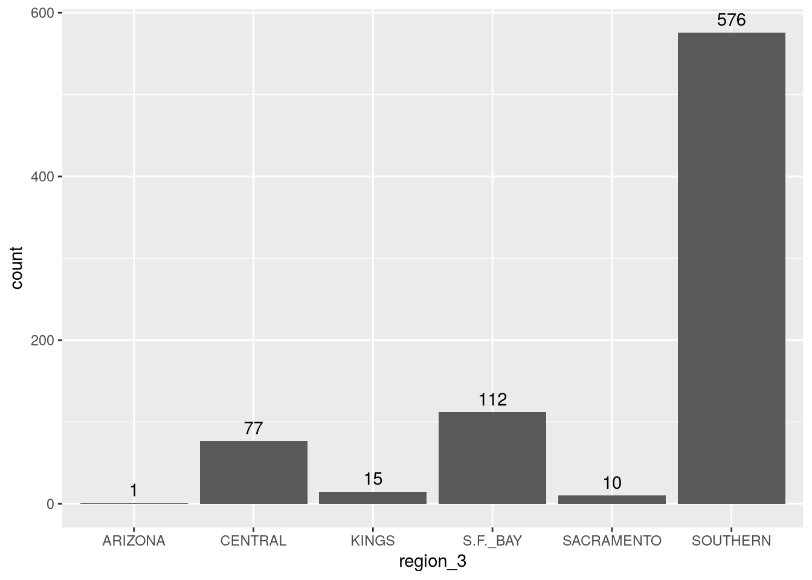
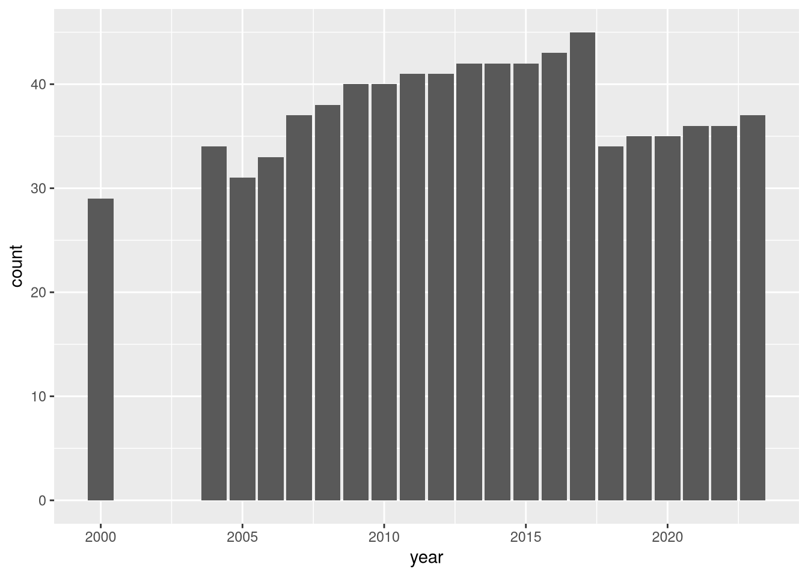
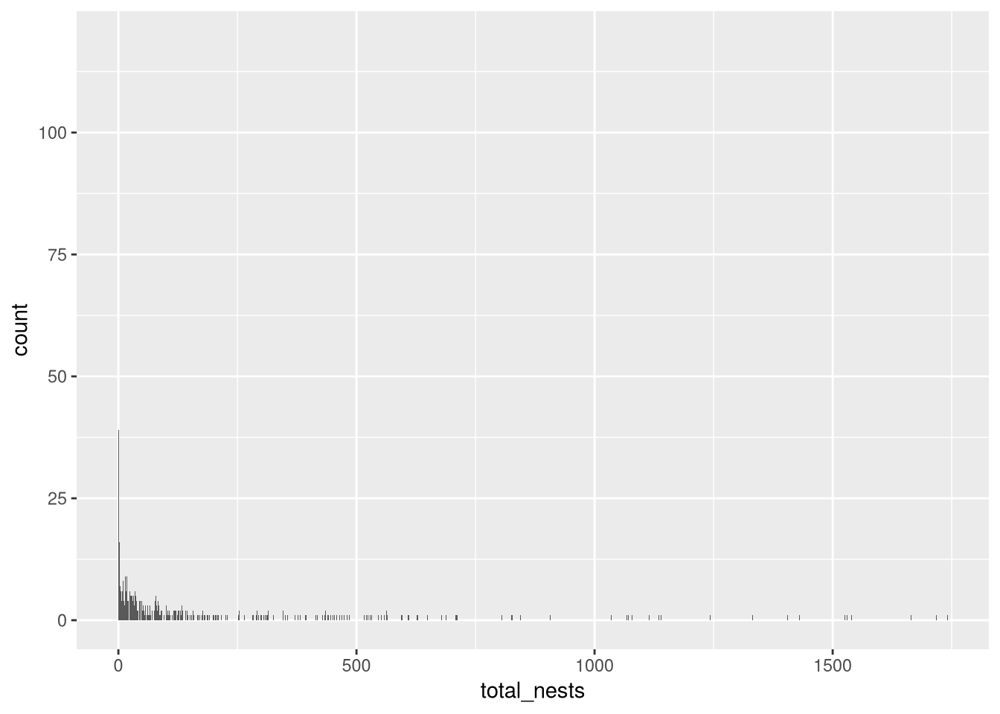

Use frequencies to summarize and interpret categorical features
Create bar plots to visualize frequencies
Explain what a distribution is
Explain the tradeoffs between bar plots and tables for presenting frequencies
Judge whether a discrete feature can be treated as categorical
ImportantRequired Packages
This chapter uses the following R packages:
dplyr
ggplot2
For a refresher about how to install and load packages, see the Packages section of DataLab’s R Basics workshop reader.
After investigating (and possibly transforming) a dataset’s structure, the next step is to examine the statistical properties of its features. This chapter and the next (Chapter 3) focus on individual features, and present a variety of statistical visualizations and estimators to summarize them. These methods will help us identify and communicate trends, patterns, anomalies, and limitations. For each method, we discuss how to interpret the summary and explain the method’s strengths and weaknesses relative to others. The unifying theme of the two chapters is summarizing, making sense of, and communicating how data are distributed within populations and samples.
To introduce ideas gently, we’ll start by focusing on summaries for categorical features. Most of the time, categories are not numbers, so we won’t use much math, and when we do, it will mostly be counting.
2.1 Getting Started
As motivation and a source of examples, we’ll work to understand which regions of California and which time periods are recorded in the California least terns dataset (Section 1.3). We’ll also examine whether regions and time periods are equally represented in the dataset.
To refresh our memory, the structure of the California least terns dataset is:
str(terns)
'data.frame': 791 obs. of 43 variables:
$ year : int 2000 2000 2000 2000 2000 2000 2000 2000 2000 2000 ...
$ site_name : chr "PITTSBURG POWER PLANT" "ALBANY CENTRAL AVE" "ALAMEDA POINT" "KETTLEMAN CITY" ...
$ site_name_2013_2018: chr "Pittsburg Power Plant" "NA_NO POLYGON" "Alameda Point" "Kettleman" ...
$ site_name_1988_2001: chr "NA_2013_2018 POLYGON" "Albany Central Avenue" "NA_2013_2018 POLYGON" "NA_2013_2018 POLYGON" ...
$ site_abbr : chr "PITT_POWER" "AL_CENTAVE" "ALAM_PT" "KET_CTY" ...
$ region_3 : chr "S.F._BAY" "S.F._BAY" "S.F._BAY" "KINGS" ...
$ region_4 : chr "S.F._BAY" "S.F._BAY" "S.F._BAY" "KINGS" ...
$ event : chr "LA_NINA" "LA_NINA" "LA_NINA" "LA_NINA" ...
$ bp_min : num 15 6 282 2 4 9 30 21 73 166 ...
$ bp_max : num 15 12 301 3 5 9 32 21 73 167 ...
$ fl_min : int 16 1 200 1 4 17 11 9 60 64 ...
$ fl_max : int 18 1 230 2 4 17 11 9 65 64 ...
$ total_nests : int 15 20 312 3 5 9 32 22 73 252 ...
$ nonpred_eggs : int 3 NA 124 NA 2 0 NA 4 2 NA ...
$ nonpred_chicks : int 0 NA 81 3 0 1 27 3 0 NA ...
$ nonpred_fl : int 0 NA 2 1 0 0 0 NA 0 NA ...
$ nonpred_ad : int 0 NA 1 6 0 0 0 NA 0 NA ...
$ pred_control : chr "" "" "" "" ...
$ pred_eggs : int 4 NA 17 NA 0 NA 0 NA NA NA ...
$ pred_chicks : int 2 NA 0 NA 4 NA 3 NA NA NA ...
$ pred_fl : int 0 NA 0 NA 0 NA 0 NA NA NA ...
$ pred_ad : int 0 NA 0 NA 0 NA 0 NA NA NA ...
$ pred_pefa : chr "N" "" "N" "" ...
$ pred_coy_fox : chr "N" "" "N" "" ...
$ pred_meso : chr "N" "" "N" "" ...
$ pred_owlspp : chr "N" "" "N" "" ...
$ pred_corvid : chr "Y" "" "N" "" ...
$ pred_other_raptor : chr "Y" "" "Y" "" ...
$ pred_other_avian : chr "N" "" "Y" "" ...
$ pred_misc : chr "N" "" "N" "" ...
$ total_pefa : int 0 NA 0 NA 0 NA 0 NA NA NA ...
$ total_coy_fox : int 0 NA 0 NA 0 NA 0 NA NA NA ...
$ total_meso : int 0 NA 0 NA 0 NA 0 NA NA NA ...
$ total_owlspp : int 0 NA 0 NA 0 NA 0 NA NA NA ...
$ total_corvid : int 4 NA 0 NA 0 NA 0 NA NA NA ...
$ total_other_raptor : int 2 NA 6 NA 0 NA 3 NA NA NA ...
$ total_other_avian : int 0 NA 11 NA 4 NA 0 NA NA NA ...
$ total_misc : int 0 NA 0 NA 0 NA 0 NA NA NA ...
$ first_observed : chr "2000-05-11" "" "2000-05-01" "2000-06-10" ...
$ last_observed : chr "2000-08-05" "" "2000-08-19" "2000-09-24" ...
$ first_nest : chr "2000-05-26" "" "2000-05-16" "2000-06-17" ...
$ first_chick : chr "2000-06-18" "" "2000-06-07" "2000-07-22" ...
$ first_fledge : chr "2000-07-08" "" "2000-06-30" "2000-08-06" ...
We can study regional coverage at a coarse scale by looking at the region_3 or region_4 columns. Let’s focus on region_3. According to the documentation, it’s categorical, with categories for three regions. The first few values are:
The documentation claims the three regions are S.F. Bay, Central, and Southern, but we can already see that this isn’t accurate. There’s another region: Kings.
The Kings region likely corresponds to sites in Kings County. We can try to confirm this by examining the site names in the region (with R’s dplyr package):
Kettleman City is indeed a place in Kings County, so it seems like our guess was correct.
Tip
As you explore data, make a habit of following up on patterns and details that seem confusing, surprising, or unusual. In some cases, as with the region_3 column, it’s possible to use other parts of a dataset to confirm a guess or make sense of what’s happening. When it’s not, turn to first-hand or expert knowledge, such as the people who collected the dataset or related literature and datasets.
For unusual details that seem tangential to the primary analysis goals, make a note and revisit them later—they can turn out to be more relevant than you expect.
2.2 Categories Are Constructs
When working with categorical features, keep in mind that categories are created by people. We often use categories to simplify and organize measurements that would otherwise be nuanced and messy. This process is double-sided: it can be clarifying, making patterns easier to see, but it can also be reductive, obscuring meaningful details. Poorly chosen categories can lead us into overlooking or misattributing effects.
At a minimum, for each categorical feature, ask:
What does the feature measure?
Why is the feature categorical?
Who defined the categories?
Are the categories clearly defined?
Are there any cases that are not covered by the defined categories? In other words, can you think of a case that would be difficult or impossible to categorize?
Are there any cases that might be of interest on their own but are placed in a broader category?
The key is to approach categorical features skeptically. Think carefully about how the categories represent what they claim to measure, and try to identify which details they gloss over.
2.3 Frequencies and Bar Plots
To summarize a categorical feature, we can count or compute frequencies of the categories. Taking this a step further, we can visualize the counts with a bar plot so that categories with low or high counts stand out.
Let’s make a bar plot of the region_3 column. In R, the ggplot2 package’s geom_bar function, which makes a bar plot, counts categories automatically:
The plot reveals two especially interesting details about region_3.
First, there are actually three unexpected regions: Kings, Sacramento, and Arizona. Each has 15 observations or less and is an order of magnitude smaller than the S.F. Bay, Central, and Southern regions.
The Sacramento region likely corresponds to Sacramento county and surrounding areas. Taking the same approach as we did for the Kings region, see if you can confirm this.
The Arizona region is a bit of a mystery—there’s no Arizona county in California, nor are there any cities or places with Arizona in the name. Let’s see if the site names give any clues:
Glendale is a city in California, but also a city in Arizona. In this case, it seems likely that the Arizona region corresponds to the state, and that perhaps these observations were not supposed to be included in the dataset.
Second, the Southern region occurs 4 or 5 times more than any of the others.
The disparity in counts between the three expected regions could be due to nesting preferences of the birds: perhaps there are more nesting sites in southern California. On the other hand, it could also be due to how the dataset is collected: perhaps the regions have different coverage over time, or CDFW uses geographically smaller sites in southern California.
Tip
Thinking through the different ways a dataset might have been generated like this can help you identify subtle details that change or temper interpretations and lead to further lines of inquiry.
2.4 Distributions
Frequencies show us how the categories of a feature are distributed across the observations. Because of this, we say they show us the distribution of the feature. For example, Figure 2.1 shows us the distribution of region_3.
Visualizing, estimating, summarizing, and interpreting distributions is a major part of any data explorer or data scientist’s job. The distribution in a sample can give us insight into the distribution in a population, especially if the sample was taken randomly.
We’ll revisit the concept of distributions in Chapter 3.
2.4.1 Mode
The category that occurs most frequently is called the mode. In the case of a tie between two or more categories, we say the feature has multiple modes. In a bar plot, the mode corresponds to the category with the tallest bar. For the region_3 column, the mode is the Southern category.
Think of the mode of a feature as the category that’s most likely if we were to randomly select an observation from the dataset. If the dataset is a random sample from a population, we can also think of the sample mode (computed with the dataset) as an estimator of the population’s mode.
Warning
There’s no built-in function to calculate the statistical mode in R. The mode function is unrelated and returns something different.
Use a bar plot (or as we’ll soon see, the table function) to identify modes.
2.5 Frequency Tables
A table is another way to display category frequencies. In R, we can use the table function to count categories and return the counts in a table. For example, the counts for region_3 are:
Even small tables can be easy to misread, especially if the names of the categories are long or include numbers. Large tables make the problem worse. Sorting by frequency partially addresses the problem:
This makes it easy to see which categories are relatively small or large, but the categories are no longer in alphabetical order, so it’s harder to find specific categories. For ordinal data, where there’s a natural order to the categories, sorting by frequency can break that order and make tables confusing.
We recommend bar plots rather than tables in most situations, because they work well for comparing category frequencies even when there are a lot of categories. As with a table, we can sort the categories by frequency in a bar plot to make the extremes more pronounced, but these are usually evident even without sorting.
Bar plots have two disadvantages compared to tables. First, the exact count for a category can be difficult to read. That’s certainly the case in Figure 2.1. A simple way to address this is to display the count on the plot:
ggplot(terns) +aes(x = region_3) +geom_bar() +geom_text(# Use counts for the labels (geom_bar also uses stat_count).stat ="count", aes(label =after_stat(count)),# Set vertical justification of the labels, so they sit atop the bars.vjust =-0.5 )

Second, bar plots are often less legible than tables to people with low vision. One way to get the best of both bar plots and tables is to simply include both.
2.6 Numbers as Categories
When a discrete feature only takes a few values and those values are repeated across many observations, we can treat it like a categorical feature. The categories just happen to be numbers.
In the California least terns dataset, the year column is a good example of this. According to the documentation, the dataset only covers about 20 years. There are multiple observations each year, because there are many different sites. Let’s make a bar plot of frequencies for year:
ggplot(terns) +aes(x = year) +geom_bar()

Figure 2.2
The bar plot shows that the dataset, which spans years 2000-2023, doesn’t include any observations for the years 2001-2003. It also shows that there are roughly 30-40 observations for every included year. That might mean most sites were consistently measured over the entire time period, or it might be a coincidence due to mostly equal numbers of sites being added and removed over time. The mode is 2017, and there’s a distinct drop in observations in 2018, which could indicate a major change in which sites were being monitored.
The counterpoint is a discrete feature with many values that are rarely repeated. A good example of this is is the total_nests column, which is an estimate of the total number of nests for each site-year pair. Here’s a bar plot of frequencies for total_nests:
ggplot(terns) +aes(x = total_nests) +geom_bar()
Warning: Removed 8 rows containing non-finite outside the scale range
(`stat_count()`).

Figure 2.3
We can see that a few values close to 0 are repeated frequently, but most of the other values are rare. Because of this and because there are so many different values, reading the bar plot is difficult. The situation is even worse with a table: